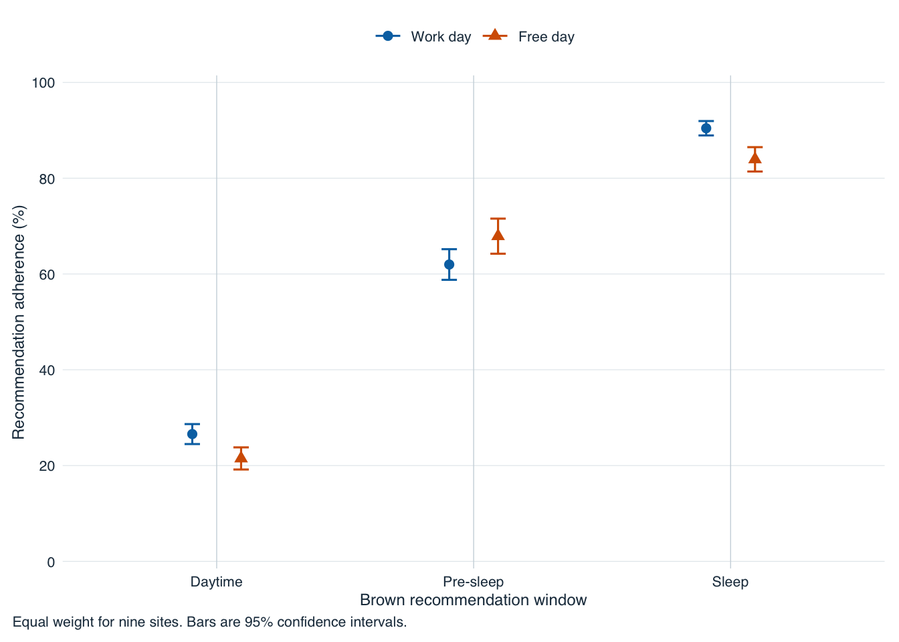
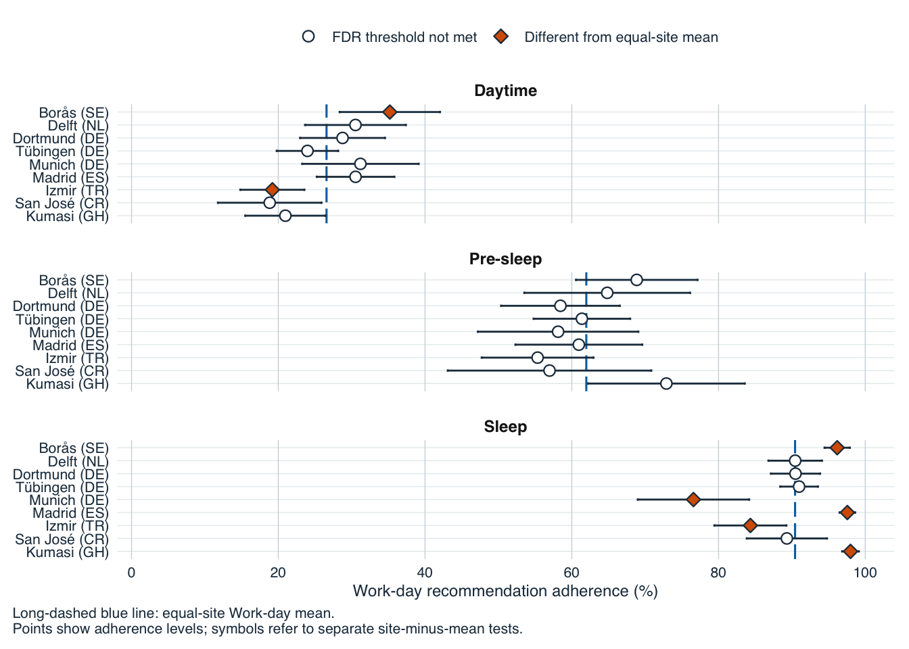
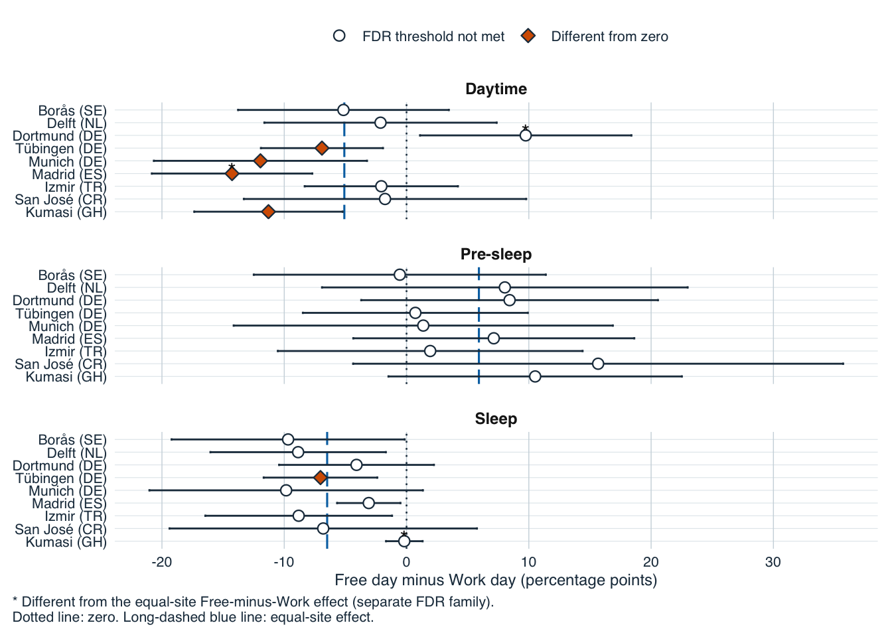
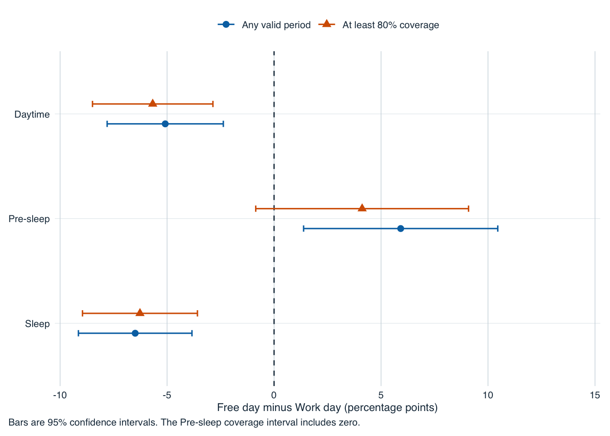

source("scripts/project.R")
analysis_setup()
library(data.table)
setDTthreads(1L)
library(gt)
`%chin%` <- data.table::`%chin%`
for (helper in c("io", "periods", "boundary_model", "fit_model", "estimands", "diagnostics", "sensitivity_frames")) {
source(file.path("scripts/models/brown", paste0(helper, ".R")))
}Recommendation adherence
This analysis estimates the proportion of valid minutes meeting the Brown recommendations within each behavioural window. It regenerates the fitted models, uncertainty, model checks, sensitivity analyses and publication displays from the prepared measurement data. Reusable R functions implement the likelihood and numerical methods; the cells below make the inputs, analytical sequence and outputs explicit.
Inputs and recommendation windows
The inputs are the regenerated minute-level coverage data and normalized sleep diaries. Daytime requires melanopic EDI of at least 250 lx; the three hours before sleep require at most 10 lx; the sleep environment requires at most 1 lx. Counts retain the actual valid-minute denominator. Sleep preceding a waking date, that date’s Daytime, and the following Pre-sleep window form one cycle, whose day type comes from the waking-date diary entry.
site_registry <- fread("config/site_display_registry.csv")
sleep <- as.data.table(readRDS("results/intermediate/model_data/normalized_inputs/sleepdiaries.rds"))
coverage_near_eye <- as.data.table(readRDS("results/intermediate/coverage/light_glasses_coverage.rds"))
coverage_chest <- as.data.table(readRDS("results/intermediate/coverage/light_chest_coverage.rds"))
required_coverage <- c(
"site",
"Id",
"position",
"datetime_utc",
"local_date",
"State.Brown",
"MEDI_eligible",
"sleep_source_row_start",
"sleep_source_row_end"
)
required_sleep <- c(
"site",
"Id",
"source_row",
"wake_wall",
"wake_utc",
"sleepprep_utc",
"daytype2",
"site_timezone"
)
if (
!all(required_coverage %chin% names(coverage_near_eye)) ||
!all(required_coverage %chin% names(coverage_chest)) ||
!all(required_sleep %chin% names(sleep))
) {
stop("Required coverage or sleep fields are missing.", call. = FALSE)
}
sleep_map <- sleep[, .(
site = as.character(site),
Id = as.character(Id),
source_row = as.integer(source_row),
behavior_date = as.Date(wake_wall),
daytype_source_value = as.character(daytype2),
day_type = data.table::fcase(
as.character(daytype2) == "a work day",
"Work day",
as.character(daytype2) == "a free day",
"Free day",
default = NA_character_
),
site_timezone = as.character(site_timezone),
wake_utc,
sleepprep_utc
)]
if (anyDuplicated(sleep_map[, .(site, Id, source_row)])) {
stop("The sleep source-row key is duplicated.", call. = FALSE)
}
state_labels <- c(
wake = "Wake outside the three hours before sleep",
`pre-sleep` = "Pre-sleep",
sleep = "Sleep environment"
)
site_levels <- site_registry[order(display_order), as.character(site)]
near_eye <- build_period_data(coverage_near_eye, "glasses", include_calendar = TRUE)
chest <- build_period_data(coverage_chest, "chest")
variant_b <- "B_previous_sleep_wake_following_presleep"
variant_c <- "C_previous_presleep_sleep_then_wake"
b_any <- factorize_frame(near_eye$period[
linkage_variant == variant_b & !is.na(day_type) & valid_minutes > 0L
])
b_80 <- b_any[b_any$support_fraction >= 0.80, , drop = FALSE]
frames <- list(B_any = b_any, B_80 = b_80)
stopifnot(all(vapply(frames, function(x) all(
x$brown_yes >= 0 & x$brown_no >= 0 & x$brown_yes + x$brown_no == x$valid_minutes
), logical(1))))
flow <- rbindlist(lapply(names(frames), function(id) {
x <- frames[[id]]
data.table(sample_id = id, rows = nrow(x), participants = uniqueN(x$participant_id),
cycles = uniqueN(x$behavioral_day_id), valid_minutes = sum(x$valid_minutes))
}))
lb_save_rds(frames, "frames/model_frames.rds")
lb_save_rds(list(near_eye = near_eye$period, chest = chest$period), "frames/window_periods.rds")
lb_write_csv(flow, "frames/sample_flow.csv")
flow sample_id rows participants cycles valid_minutes
<char> <int> <int> <int> <int>
1: B_any 2298 140 794 1043192
2: B_80 2069 140 762 996868Endpoint-inflated beta-binomial model
The mean includes the full window × site × day-type interaction and a participant random intercept. Separate mixture components account for all-zero and all-one periods, with the all-one component restricted to Pre-sleep and Sleep. Window-specific beta-binomial dispersion accounts for remaining count heterogeneity. The C++ files implement this likelihood and its integrated predictions through TMB. Compilation, exact probability and moment checks, and automatic-derivative checks run before fitting.
brown_compile("endpoint_inflated_betabinomial")Note: Using Makevars in /Users/zauner/Projects/ZaunerEtAl_reproducible_NH/config/Makevars brown_compile("endpoint_inflated_estimands")Note: Using Makevars in /Users/zauner/Projects/ZaunerEtAl_reproducible_NH/config/Makevars brown_compile("endpoint_inflated_sensitivity_estimands")Note: Using Makevars in /Users/zauner/Projects/ZaunerEtAl_reproducible_NH/config/Makevars synthetic_design <- function(
y,
n,
one_active,
use_zero_component,
eta_mu,
eta_zero,
eta_one,
eta_disp
) {
observations <- length(y)
list(
design = list(
data = list(
y = as.integer(y),
n = as.integer(n),
X_mu = matrix(1, observations, 1),
X_zero = matrix(1, observations, 1),
X_one = matrix(1, observations, 1),
X_disp = matrix(1, observations, 1),
Z_mu_part = matrix(1, observations, 1),
part_index = rep(0L, observations),
day_index = rep(0L, observations),
one_active = as.integer(one_active),
use_zero_component = as.integer(use_zero_component),
use_mu_part_re = 0L,
use_day_re = 0L,
use_zero_re = 0L,
use_one_re = 0L
)
),
parameters = list(
beta_mu = eta_mu,
beta_zero = eta_zero,
beta_one = eta_one,
beta_disp = eta_disp,
b_mu_part = matrix(0, 1, 1),
b_day = 0,
b_zero_part = 0,
b_one_part = 0,
log_sd_mu_part = 0,
log_sd_day = 0,
log_sd_zero = 0,
log_sd_one = 0
)
)
}
grid <- expand.grid(
n = c(1L, 2L, 12L),
eta_mu = c(-2, 0.5),
one_active = c(FALSE, TRUE),
use_zero = c(FALSE, TRUE)
)
exact <- lapply(seq_len(nrow(grid)), function(i) {
g <- grid[i, ]
s <- synthetic_design(
0:g$n,
rep(g$n, g$n + 1L),
rep(g$one_active, g$n + 1L),
g$use_zero,
g$eta_mu,
-1.1,
-0.8,
log(7)
)
object <- ba_boundary_make_object(s$design, s$parameters)
objective_value <- object$fn()
report <- object$report()
weights <- ba_boundary_component_weights(-1.1, -0.8, g$one_active, g$use_zero)
pmf <- ba_boundary_mixture_support(
g$n,
plogis(g$eta_mu),
7,
weights$pi_zero,
weights$pi_one,
weights$pi_beta
)
fraction <- pmf$y / g$n
exact_mean <- sum(fraction * pmf$probability)
exact_variance <- sum((fraction - exact_mean)^2 * pmf$probability)
data.frame(
case = i,
n = g$n,
one_active = g$one_active,
use_zero = g$use_zero,
normalization_error = abs(sum(pmf$probability) - 1),
objective_error = abs(objective_value + sum(log(pmf$probability))),
pmf_error = max(abs(exp(report$log_likelihood) - pmf$probability)),
mean_error = max(abs(report$conditional_mean - exact_mean)),
variance_error = max(abs(report$conditional_variance - exact_variance)),
cdf_minimum_increment = min(diff(c(0, pmf$cdf))),
cdf_terminal_error = abs(tail(pmf$cdf, 1L) - 1),
zero_restriction_exact = g$use_zero || all(report$pi_zero == 0),
one_restriction_exact = g$one_active || all(report$pi_one == 0)
)
})
exact <- do.call(rbind, exact)
derivative <- synthetic_design(
c(0L, 2L, 5L, 8L, 10L),
rep(10L, 5L),
c(FALSE, TRUE, TRUE, TRUE, TRUE),
TRUE,
-0.2,
-1.1,
-0.8,
log(7)
)
object <- ba_boundary_make_object(derivative$design, derivative$parameters)
theta <- object$par
ad <- object$gr(theta)
fd <- vapply(
seq_along(theta),
function(i) {
delta <- 1e-6 * (1 + abs(theta[i]))
upper <- lower <- theta
upper[i] <- upper[i] + delta
lower[i] <- lower[i] - delta
(object$fn(upper) - object$fn(lower)) / (2 * delta)
},
numeric(1)
)
derivatives <- data.frame(
parameter = names(theta),
automatic = ad,
finite_difference = fd,
absolute_difference = abs(ad - fd)
)
stopifnot(max(exact$normalization_error) < 1e-12,
max(exact$objective_error) < 1e-7, max(exact$pmf_error) < 1e-12,
max(exact$mean_error) < 1e-12, max(exact$variance_error) < 1e-12,
min(exact$cdf_minimum_increment) >= -1e-14,
max(exact$cdf_terminal_error) < 1e-12,
all(exact$zero_restriction_exact & exact$one_restriction_exact),
max(derivatives$absolute_difference) < 1e-4)
lb_write_csv(exact, "likelihood/probability_moment_checks.csv")
lb_write_csv(derivatives, "likelihood/derivative_checks.csv")Primary models
Both the any-valid-period sample and the sample with at least 80% window coverage use the same model. Starting values for the any-valid sample are calculated deterministically from its design. The 80% fit starts from that newly fitted model, matching participant effects by participant identifier. Numerical convergence, gradient, Hessian and variance checks are exported with each fit.
primary_models <- list()
for (sample_id in c("B_any", "B_80")) {
design <- ba_boundary_build_design(frames[[sample_id]], "F3", "R3", "Q2", "Q1", "D0")
initial <- ba_boundary_initial_parameters(design)
if (sample_id == "B_80") {
parent <- primary_models$B_any
for (component in c("beta_mu", "beta_zero", "beta_one", "beta_disp",
"log_sd_mu_part", "log_sd_day", "log_sd_zero", "log_sd_one")) {
stopifnot(length(initial[[component]]) == length(parent$parameter_list[[component]]))
initial[[component]] <- parent$parameter_list[[component]]
}
participant_match <- match(design$levels$participant_id, parent$design_object$levels$participant_id)
stopifnot(!anyNA(participant_match))
initial$b_mu_part <- parent$parameter_list$b_mu_part[participant_match, , drop = FALSE]
}
model_id <- paste0("BA-LB-PRIMARY-", if (sample_id == "B_any") "ANY" else "80")
fit <- ba_lb_fit_candidate(design, initial, model_id, sample_id)
brown_save_fit(fit)
primary_models[[sample_id]] <- fit
print(fit$fit_diagnostics[, .(model_id, rows, participants, objective,
maximum_absolute_gradient, fit_status, failure_components)])
stopifnot(!fit$fit_diagnostics$structural_failure)
} model_id rows participants objective maximum_absolute_gradient
<char> <int> <int> <num> <num>
1: BA-LB-PRIMARY-ANY 2298 140 11024.61 0.001458872
fit_status failure_components
<char> <char>
1: acceptable_with_cautions
model_id rows participants objective maximum_absolute_gradient
<char> <int> <int> <num> <num>
1: BA-LB-PRIMARY-80 2069 140 10125.89 0.005285724
fit_status failure_components
<char> <char>
1: acceptable_with_cautions Marginal adherence and contrasts
Predictions integrate over the participant effect, average the observed valid-minute denominators within each window/site/day-type cell, and weight the nine sites equally. The 15-node and 30-node quadrature results must agree within 0.05 percentage points. The primary Free-minus-Work contrasts use one three-window false-discovery-rate family per sample. Additional site and interaction contrasts retain their specified multiplicity families.
model_paths <- c(primary_any_valid = brown_file("models/BA-LB-PRIMARY-ANY.rds"),
support_80 = brown_file("models/BA-LB-PRIMARY-80.rds"))
site_registry <- data.table::fread("config/site_display_registry.csv")
site_registry <- site_registry[order(display_order)]
site_label <- stats::setNames(site_registry$display_name, site_registry$site)
state_label <- c(
"Wake outside the three hours before sleep" = "Daytime",
"Pre-sleep" = "Pre-sleep",
"Sleep environment" = "Sleep"
)
day_label <- c("Work day" = "Work day", "Free day" = "Free day")
derived <- lapply(names(model_paths), function(sample_id) {
derive_sample(sample_id, model_paths[[sample_id]])
})
names(derived) <- names(model_paths)
collect <- function(name)
data.table::rbindlist(lapply(derived, `[[`, name), fill = TRUE)
cell_predictions <- collect("cell_predictions")
equal_site_means <- collect("equal_site_means")
quadrature <- collect("quadrature")
families <- lapply(paste0("m", seq_len(5L)), collect)
names(families) <- paste0("BA_M", seq_len(5L))
family_checks <- data.table::rbindlist(lapply(seq_along(families), function(i) {
family_table <- as.data.frame(families[[i]])
expected <- c(3L, 3L, 1L, 27L, 54L)[[i]]
data.table::rbindlist(lapply(names(model_paths), function(sample) {
z <- family_table[family_table[["sample_id"]] == sample, , drop = FALSE]
data.table::data.table(
family = names(families)[[i]],
sample_id = sample,
expected = expected,
observed = nrow(z),
passed = nrow(z) == expected &&
all(is.finite(z$p_value)) &&
all(is.finite(z$p_adjusted))
)
}))
}))
primary_cells <- derived$primary_any_valid$cell_predictions
key <- function(x) paste(x$analysis_state, x$site, x$day_type, sep = "||")
m1 <- families$BA_M1
coverage <- merge(
m1[sample_id == "primary_any_valid"],
m1[sample_id == "support_80"],
by = c("analysis_state", "state_display", "family", "contrast", "weighting"),
suffixes = c("_any_valid", "_80")
)
coverage[, `:=`(
direction_preserved = sign(estimate_any_valid) == sign(estimate_80),
interval_exclusion_any_valid = conf_low_any_valid > 0 |
conf_high_any_valid < 0,
interval_exclusion_80 = conf_low_80 > 0 | conf_high_80 < 0,
absolute_shift_percentage_points = 100 * abs(estimate_80 - estimate_any_valid)
)]
coverage[,
interval_exclusion_preserved := interval_exclusion_any_valid ==
interval_exclusion_80
]
coverage[,
passed := direction_preserved &
interval_exclusion_preserved &
absolute_shift_percentage_points <= 2
]
grid <- primary_cells
members <- unique(grid[, .(analysis_state, state_display, site, site_display)])
members[,
state_order := match(state_display, c("Daytime", "Pre-sleep", "Sleep"))
]
members[, site_order := match(site, site_registry$site)]
data.table::setorder(members, state_order, site_order)
members[, member_id := sprintf("BA-M6-%02d", seq_len(.N))]
stopifnot(
nrow(members) == 27L,
!anyNA(members),
!anyDuplicated(members[, .(analysis_state, site)])
)
contrast_matrix <- matrix(
0,
nrow = 27L,
ncol = 54L,
dimnames = list(members$member_id, grid$cell_id)
)
for (i in seq_len(nrow(members))) {
state <- members$analysis_state[[i]]
site <- members$site[[i]]
state_free <- which(
grid$analysis_state == state & grid$day_type == "Free day"
)
state_work <- which(
grid$analysis_state == state & grid$day_type == "Work day"
)
site_free <- which(
grid$analysis_state == state &
grid$site == site &
grid$day_type == "Free day"
)
site_work <- which(
grid$analysis_state == state &
grid$site == site &
grid$day_type == "Work day"
)
stopifnot(
length(state_free) == 9L,
length(state_work) == 9L,
length(site_free) == 1L,
length(site_work) == 1L
)
contrast_matrix[i, state_free] <- -1 / 9
contrast_matrix[i, state_work] <- 1 / 9
contrast_matrix[i, site_free] <- contrast_matrix[i, site_free] + 1
contrast_matrix[i, site_work] <- contrast_matrix[i, site_work] - 1
}
stopifnot(
all(rowSums(abs(contrast_matrix) > 0) == 18L),
max(abs(rowSums(contrast_matrix))) < 1e-12
)
m6 <- lapply(names(derived), function(sample) {
stored <- derived[[sample]]
stopifnot(identical(key(stored$cell_predictions), key(grid)))
value <- stored$sd_report$value[seq_len(54L)]
covariance <- stored$sd_report$cov[seq_len(54L), seq_len(54L), drop = FALSE]
estimate <- as.numeric(contrast_matrix %*% value)
variance <- diag(contrast_matrix %*% covariance %*% t(contrast_matrix))
stopifnot(
all(is.finite(estimate)),
all(is.finite(variance)),
all(variance > 0)
)
result <- data.table::copy(members)
result[, `:=`(
sample_id = sample,
family = "BA-M6",
estimate = estimate,
standard_error = sqrt(variance)
)]
result[, `:=`(
conf_low = estimate - stats::qnorm(0.975) * standard_error,
conf_high = estimate + stats::qnorm(0.975) * standard_error
)]
member_key <- paste(result$analysis_state, result$site)
from_m4 <- stored$m4$estimate[match(
member_key,
paste(stored$m4$analysis_state, stored$m4$site)
)]
from_m1 <- stored$m1$estimate[match(
result$analysis_state,
stored$m1$analysis_state
)]
m5_free <- stored$m5$estimate[match(
paste(member_key, "Free day"),
paste(stored$m5$analysis_state, stored$m5$site, stored$m5$day_type)
)]
m5_work <- stored$m5$estimate[match(
paste(member_key, "Work day"),
paste(stored$m5$analysis_state, stored$m5$site, stored$m5$day_type)
)]
result[, `:=`(
from_M4_minus_M1 = from_m4 - from_m1,
from_free_M5_minus_work_M5 = m5_free - m5_work
)]
result[, state_sum := sum(estimate), by = analysis_state]
result[,
reconciliation_passed := abs(estimate - from_M4_minus_M1) < 1e-12 &
abs(estimate - from_free_M5_minus_work_M5) < 1e-12 &
abs(state_sum) < 1e-12
]
stopifnot(all(result$reconciliation_passed))
if (sample == "primary_any_valid") {
result[, statistic := estimate / standard_error]
result[, p_value := 2 * stats::pnorm(abs(statistic), lower.tail = FALSE)]
stopifnot(nrow(result) == 27L, all(is.finite(result$p_value)))
result[, p_adjusted := stats::p.adjust(p_value, method = "BH")]
result[, fdr_significant := p_adjusted < 0.05]
}
result
})
names(m6) <- names(derived)
m6_coverage <- merge(
m6$primary_any_valid,
m6$support_80,
by = c(
"member_id",
"analysis_state",
"state_display",
"site",
"site_display",
"state_order",
"site_order",
"family"
),
suffixes = c("_primary", "_80")
)
m6_coverage[, `:=`(
direction_retained = sign(estimate_primary) == sign(estimate_80),
interval_exclusion_retained = (conf_low_primary > 0 |
conf_high_primary < 0) ==
(conf_low_80 > 0 | conf_high_80 < 0),
fully_estimable = is.finite(standard_error_primary) &
is.finite(standard_error_80)
)]
m6_coverage[,
significant_direction_changed := fdr_significant & !direction_retained
]
m6_coverage[,
sensitivity_qualification_required := direction_retained &
!interval_exclusion_retained
]
probabilities <- c(
"adherence",
"all_zero_probability",
"all_one_probability",
"mixed_probability",
"extra_all_zero_probability",
"extra_all_one_probability",
"beta_binomial_component_probability"
)
probability_values <- as.matrix(cell_predictions[, ..probabilities])
stopifnot(all(quadrature$passed), all(family_checks$passed),
all(vapply(m6, function(x) all(x$reconciliation_passed), logical(1))))
lb_save_rds(list(derived = derived, m6 = m6, contrast_matrix_M6 = contrast_matrix,
coverage_stability = coverage, m6_coverage = m6_coverage), "estimands/boundary_estimands.rds")
lb_write_csv(cell_predictions, "estimands/cell_predictions.csv")
lb_write_csv(equal_site_means, "estimands/equal_site_means.csv")
lb_write_csv(quadrature, "estimands/quadrature_check.csv")
lb_write_csv(coverage, "estimands/coverage_stability.csv")
lb_write_csv(collect("compact_source"), "estimands/compact_table_source.csv")
for (name in names(families))
lb_write_csv(families[[name]], paste0("multiplicity/", name, ".csv"))
lb_write_csv(m6$primary_any_valid, "multiplicity/BA_M6_primary.csv")
lb_write_csv(m6$support_80, "multiplicity/BA_M6_support80.csv")
lb_write_csv(m6_coverage, "multiplicity/BA_M6_coverage_stability.csv")
lb_write_csv(
data.frame(
member_id = members$member_id,
contrast_matrix,
check.names = FALSE
),
"multiplicity/BA_M6_contrast_matrix.csv"
)
lb_write_csv(family_checks, "multiplicity/family_checks.csv")Model diagnostics
Randomized quantile residuals, simulated count distributions, boundary probabilities, calibration, and temporal residual associations assess model adequacy. The simulation seeds are fixed. The central quick profile reduces the usual 250 predictive simulations to 50.
primary_diagnostics <- lapply(names(model_paths), function(id) {
result <- derive_diagnostics(id, model_paths[[id]])
for (name in names(result)) {
if (is.data.frame(result[[name]])) lb_write_csv(result[[name]], paste0("diagnostics/", id, "/", name, ".csv"))
}
lb_save_rds(result, paste0("diagnostics/", id, "/diagnostics.rds"))
result
})
names(primary_diagnostics) <- names(model_paths)
rbindlist(lapply(primary_diagnostics, `[[`, "assessment")) |> gt()| sample_id | target | status | detail |
|---|---|---|---|
| primary_any_valid | overall_adherence | acceptable_with_limitations | maximum absolute state-site-day-type adherence calibration difference 0.055 |
| primary_any_valid | endpoint_probabilities | acceptable | 5 of 5 applicable state endpoint envelopes passed |
| primary_any_valid | actual_date_temporal_dependence | triggered | 3 state residual series reached the temporal trigger |
| primary_any_valid | numerical_fit | acceptable_with_cautions | Optimizer convergence code 0; maximum absolute gradient 0.00145887; structural failure: FALSE |
| support_80 | overall_adherence | acceptable_with_limitations | maximum absolute state-site-day-type adherence calibration difference 0.088 |
| support_80 | endpoint_probabilities | acceptable | 5 of 5 applicable state endpoint envelopes passed |
| support_80 | actual_date_temporal_dependence | triggered | 3 state residual series reached the temporal trigger |
| support_80 | numerical_fit | acceptable_with_cautions | Optimizer convergence code 0; maximum absolute gradient 0.00528572; structural failure: FALSE |
Coverage, thresholds and period eligibility
Eight alternatives vary coverage, very short windows, complete three-window cycles, observation of both day types, inclusive versus strict thresholds, and exclusion of all-zero periods. A ninth holds dispersion constant across windows. Each uses a fresh fit of the same endpoint-inflated model. If excluding zero periods makes the zero-inflation component unidentifiable, a conditional model disables only that component; its interpretation remains conditional on some adherent minutes.
source("scripts/models/brown/comparisons.R")
sensitivity_env <- new.env(parent = environment())
sys.source("scripts/models/brown/sensitivity_estimands.R", sensitivity_env)
primary_m1 <- families$BA_M1[sample_id == "primary_any_valid"]
sensitivity_frames <- lb_simple_sensitivity_frames(frames$B_any)
scenario_ids <- c("SENS-SUPPORT70", "SENS-SUPPORT90", "SENS-TINYGT5", "SENS-TINYGT30",
"SENS-COMPLETE-TRIADS", "SENS-BOTH-DAYTYPES", "SENS-STRICT", "SENS-EXCLUDE-ZERO")
names(sensitivity_frames) <- scenario_ids
sensitivity_frames$`SENS-DISPERSION-D1` <- frames$B_any
simple_fits <- list()
simple_comparisons <- list()
for (scenario in names(sensitivity_frames)) {
design <- ba_boundary_build_design(sensitivity_frames[[scenario]], "F3", "R3", "Q2", "Q1",
if (scenario == "SENS-DISPERSION-D1") "D1" else "D0")
initial <- ba_boundary_initial_parameters(design)
bundle <- ba_lb_fit_candidate(design, initial, paste0("BA-LB-", scenario), scenario)
brown_save_fit(bundle)
simple_fits[[scenario]] <- bundle
if (scenario == "SENS-EXCLUDE-ZERO" && bundle$fit_diagnostics$structural_failure) {
zero <- bundle$fixed_summary[bundle$fixed_summary$parameter == "beta_zero", ]
stopifnot(all(design$data$y > 0L),
bundle$fit_diagnostics$failure_components == "endpoint_separation",
any(abs(zero$estimate) > 15 | zero$standard_error > 10))
design$data$use_zero_component <- 0L
design$specification$use_zero_component <- FALSE
scenario <- "SENS-EXCLUDE-ZERO-NOZERO"
bundle <- ba_lb_fit_candidate(design, initial, paste0("BA-LB-", scenario), scenario)
brown_save_fit(bundle)
simple_fits[[scenario]] <- bundle
}
if (!bundle$fit_diagnostics$structural_failure) {
result <- sensitivity_env$derive_one(scenario, brown_file(paste0("models/", bundle$model_id, ".rds")))
stopifnot(all(result$quadrature$passed))
simple_comparisons[[scenario]] <- brown_export_estimands(result,
paste0("sensitivities/simple_estimands/", scenario), primary_m1, scenario)
}
}
lb_write_csv(rbindlist(simple_comparisons, fill = TRUE), "sensitivities/simple_comparisons.csv")Site and participant influence
Leave-one-site-out fits assess dependence on each site. Five participant deletions are selected by the maximum percentile across minute share, residual magnitudes and fixed-predictor variance measures. Each deletion refits the model with starting mean predictors projected onto the remaining design. The exported estimates retain their interval and directional comparison with the full sample.
source("scripts/models/brown/deletion_initializer.R")
deletion_env <- new.env(parent = sensitivity_env)
sys.source("scripts/models/brown/deletion_estimands.R", deletion_env)
primary_bundle <- primary_models$B_any
primary_frame <- primary_bundle$design_object$frame
primary_parameters <- primary_bundle$parameter_list
primary_levels <- lapply(primary_frame[c("analysis_state", "site", "day_type")], levels)
screen <- as.data.frame(primary_diagnostics$primary_any_valid$participant_influence)
metrics <- c("valid_minute_share", "mean_absolute_pearson_residual", "maximum_absolute_pearson_residual",
"mean_absolute_quantile_residual", "maximum_absolute_quantile_residual",
"maximum_fixed_linear_predictor_variance", "sum_fixed_linear_predictor_variance")
percentiles <- vapply(metrics, function(m) frank(screen[[m]], ties.method = "average") / nrow(screen), numeric(nrow(screen)))
ordered_screen <- data.table(score = apply(percentiles, 1L, max), participant_id = screen$participant_id)
setorder(ordered_screen, -score, participant_id)
selected <- ordered_screen$participant_id[seq_len(5L)]
sites <- c("RISE", "THUAS", "BAUA", "MPI", "TUM", "FUSPCEU", "IZTECH", "UCR", "KNUST")
targets <- data.frame(scenario = c(paste0("LOSO-", sites), paste0("INFLUENCE-", seq_len(5L))),
variable = c(rep("site", length(sites)), rep("participant_id", 5L)),
target = c(sites, as.character(selected)))
deletion_comparisons <- list()
for (i in seq_len(nrow(targets))) {
target <- targets[i, ]
keep <- as.character(primary_frame[[target$variable]]) != target$target
raw_frame <- primary_frame[keep, , drop = FALSE]
design <- ba_boundary_build_design(raw_frame, "F3", "R3", "Q2", "Q1", "D0")
initial <- prepare_start(raw_frame, design)
stopifnot(max(abs(as.numeric(primary_bundle$design_object$data$X_mu[keep, , drop = FALSE] %*% primary_parameters$beta_mu) -
as.numeric(design$data$X_mu %*% initial$beta_mu))) <= 1e-8)
bundle <- ba_lb_fit_candidate(design, initial, paste0("BA-LB-", target$scenario), target$scenario)
brown_save_fit(bundle)
if (!bundle$fit_diagnostics$structural_failure) {
result <- deletion_env$brown_deletion_estimands(bundle, target$scenario)
deletion_comparisons[[target$scenario]] <- brown_export_estimands(result,
paste0("sensitivities/deletion_estimands/", target$scenario), primary_m1, target$scenario)
}
}
lb_write_csv(rbindlist(deletion_comparisons, fill = TRUE), "sensitivities/deletion_comparisons.csv")
rbindlist(deletion_comparisons, fill = TRUE)[, .(scenario, state_display, estimate,
conf_low, conf_high, shift_percentage_points, direction_retained)] |> gt()| scenario | state_display | estimate | conf_low | conf_high | shift_percentage_points | direction_retained |
|---|---|---|---|---|---|---|
| LOSO-RISE | Daytime | -0.05111863 | -0.079702647 | -0.022534618 | -0.025161413 | TRUE |
| LOSO-RISE | Pre-sleep | 0.06872798 | 0.020248319 | 0.117207646 | 0.954816407 | TRUE |
| LOSO-RISE | Sleep | -0.06507948 | -0.093996593 | -0.036162365 | -0.016985687 | TRUE |
| LOSO-THUAS | Daytime | -0.05480960 | -0.082704286 | -0.026914904 | -0.394257652 | TRUE |
| LOSO-THUAS | Pre-sleep | 0.05536692 | 0.008321332 | 0.102412509 | -0.381289736 | TRUE |
| LOSO-THUAS | Sleep | -0.06054987 | -0.088805783 | -0.032293961 | 0.435974984 | TRUE |
| LOSO-BAUA | Daytime | -0.06986019 | -0.097434701 | -0.042285686 | -1.899317469 | TRUE |
| LOSO-BAUA | Pre-sleep | 0.05704313 | 0.008498704 | 0.105587558 | -0.213668758 | TRUE |
| LOSO-BAUA | Sleep | -0.06703693 | -0.095852220 | -0.038221649 | -0.212731258 | TRUE |
| LOSO-MPI | Daytime | -0.04822543 | -0.077131537 | -0.019319327 | 0.264158681 | TRUE |
| LOSO-MPI | Pre-sleep | 0.06741288 | 0.017071857 | 0.117753899 | 0.823305953 | TRUE |
| LOSO-MPI | Sleep | -0.06299822 | -0.092730139 | -0.033266293 | 0.191140620 | TRUE |
| LOSO-TUM | Daytime | -0.04288700 | -0.071440844 | -0.014333165 | 0.798001403 | TRUE |
| LOSO-TUM | Pre-sleep | 0.06324698 | 0.015892150 | 0.110601809 | 0.406716115 | TRUE |
| LOSO-TUM | Sleep | -0.06187756 | -0.088245635 | -0.035509491 | 0.303205923 | TRUE |
| LOSO-FUSPCEU | Daytime | -0.03904668 | -0.069115759 | -0.008977605 | 1.182033709 | TRUE |
| LOSO-FUSPCEU | Pre-sleep | 0.05420823 | 0.005206745 | 0.103209711 | -0.497159024 | TRUE |
| LOSO-FUSPCEU | Sleep | -0.06993605 | -0.099439015 | -0.040433080 | -0.502642562 | TRUE |
| LOSO-IZTECH | Daytime | -0.05415646 | -0.084314473 | -0.023998455 | -0.328944544 | TRUE |
| LOSO-IZTECH | Pre-sleep | 0.06605309 | 0.017151675 | 0.114954503 | 0.687327071 | TRUE |
| LOSO-IZTECH | Sleep | -0.05944327 | -0.087693882 | -0.031192660 | 0.546635117 | TRUE |
| LOSO-UCR | Daytime | -0.05504253 | -0.082197712 | -0.027887348 | -0.417551167 | TRUE |
| LOSO-UCR | Pre-sleep | 0.04791983 | 0.003427732 | 0.092411932 | -1.125998632 | TRUE |
| LOSO-UCR | Sleep | -0.06479458 | -0.089862020 | -0.039727139 | 0.011504216 | TRUE |
| LOSO-KNUST | Daytime | -0.04239577 | -0.072618028 | -0.012173519 | 0.847124539 | TRUE |
| LOSO-KNUST | Pre-sleep | 0.05489132 | 0.006136733 | 0.103645910 | -0.428849682 | TRUE |
| LOSO-KNUST | Sleep | -0.07237417 | -0.100980395 | -0.043767940 | -0.746454586 | TRUE |
| INFLUENCE-1 | Daytime | -0.05687285 | -0.083634711 | -0.030110996 | -0.600583470 | TRUE |
| INFLUENCE-1 | Pre-sleep | 0.05870363 | 0.013176563 | 0.104230701 | -0.047618577 | TRUE |
| INFLUENCE-1 | Sleep | -0.06300525 | -0.089232390 | -0.036778114 | 0.190437007 | TRUE |
| INFLUENCE-2 | Daytime | -0.05050162 | -0.077735293 | -0.023267939 | 0.036540236 | TRUE |
| INFLUENCE-2 | Pre-sleep | 0.05802002 | 0.012256720 | 0.103783330 | -0.115979324 | TRUE |
| INFLUENCE-2 | Sleep | -0.06500757 | -0.091721015 | -0.038294128 | -0.009794932 | TRUE |
| INFLUENCE-3 | Daytime | -0.05228105 | -0.079604920 | -0.024957171 | -0.141402662 | TRUE |
| INFLUENCE-3 | Pre-sleep | 0.06166649 | 0.015903039 | 0.107429937 | 0.248666984 | TRUE |
| INFLUENCE-3 | Sleep | -0.06439559 | -0.089856054 | -0.038935129 | 0.051403058 | TRUE |
| INFLUENCE-5 | Daytime | -0.05301479 | -0.080166396 | -0.025863183 | -0.214777097 | TRUE |
| INFLUENCE-5 | Pre-sleep | 0.05802990 | 0.012209950 | 0.103849841 | -0.114992276 | TRUE |
| INFLUENCE-5 | Sleep | -0.06664871 | -0.093448510 | -0.039848902 | -0.173908405 | TRUE |
Alternative response distributions and weighting
An ordinary-binomial model, a non-inflated beta-binomial model and fractional models with equal-period or valid-minute weights assess distributional assumptions. Fractional uncertainty uses participant-cluster HC3 covariance. An additional summary weights the primary model’s site means by observed support. These are sensitivity estimates with no additional significance families.
source("scripts/models/brown/comparison_models.R")
comparison_env <- new.env(parent = environment())
sys.source("scripts/models/brown/comparison_estimands.R", comparison_env)
comparison_env$mean_result <- mean_result
comparison_data <- ba_prepare_factor_frame(frames$B_any)
family_models <- list()
for (scenario in c("DIAG-BINOMIAL", "B-BETA-BINOMIAL", "FRACTIONAL-EQUAL", "FRACTIONAL-MINUTE")) {
model_id <- paste0("BA-LB-", scenario)
if (grepl("FRACTIONAL", scenario)) {
bundle <- fit_fractional(comparison_data, weighted = scenario == "FRACTIONAL-MINUTE", model_id = model_id)
} else {
started <- proc.time()[["elapsed"]]
fitted <- if (scenario == "DIAG-BINOMIAL") ba_fit_binomial(comparison_data, ba_formula_f3_r0) else
ba_fit_beta_binomial(comparison_data, ba_formula_f3_r0, ba_dispersion_state)
assessment <- ba_assess_fit(fitted, comparison_data, model_id, "B_any", "BA-F3-R0", "D0",
proc.time()[["elapsed"]] - started,
family_name = if (scenario == "DIAG-BINOMIAL") "binomial" else "betabinomial")
bundle <- list(model = fitted, data = comparison_data, fit_diagnostics = assessment$fit_diagnostics, random_sd = assessment$random_sd)
}
family_models[[scenario]] <- bundle
lb_save_rds(bundle, paste0("models/", model_id, ".rds"))
lb_write_csv(bundle$fit_diagnostics, paste0("models/", model_id, "_fit_diagnostics.csv"))
}Fitting BA-LB-FRACTIONAL-EQUAL ...
Finished BA-LB-FRACTIONAL-EQUAL in 0.1 seconds with status `acceptable`.
Fitting BA-LB-FRACTIONAL-MINUTE ...
Finished BA-LB-FRACTIONAL-MINUTE in 0.0 seconds with status `acceptable`.family_comparisons <- list()
family_status <- rbindlist(lapply(names(family_models), function(id) {
bundle <- family_models[[id]]
data.table(scenario = id, fit_status = bundle$fit_diagnostics$fit_status,
hard_failure = bundle$fit_diagnostics$hard_failure, estimates_eligible = !bundle$fit_diagnostics$hard_failure)
}))
for (scenario in names(family_models)) {
bundle <- family_models[[scenario]]
if (bundle$fit_diagnostics$hard_failure) next
cells <- if (grepl("FRACTIONAL", scenario)) comparison_env$integrated_cells_fractional(bundle) else
comparison_env$integrated_cells_glmm(bundle$model, bundle$data, 30L)
covariance <- cells$gradient %*% cells$variance_covariance %*% t(cells$gradient)
contrasts <- lapply(levels(bundle$data$analysis_state), function(state) {
w <- as.numeric(cells$grid$analysis_state == state & cells$grid$day_type == "Free day") / 9 -
as.numeric(cells$grid$analysis_state == state & cells$grid$day_type == "Work day") / 9
cbind(data.frame(analysis_state = state), mean_result(w, cells$probability, covariance))
})
family_comparisons[[scenario]] <- brown_compare(do.call(rbind, contrasts), primary_m1, scenario)
}
lb_write_csv(family_status, "sensitivities/family_grouping_weighting/family_status.csv")
lb_write_csv(rbindlist(family_comparisons, fill = TRUE), "sensitivities/family_grouping_weighting/family_comparison.csv")
grid <- derived$primary_any_valid$cell_predictions
value <- derived$primary_any_valid$sd_report$value[seq_len(54L)]
covariance <- derived$primary_any_valid$sd_report$cov[seq_len(54L), seq_len(54L)]
site_weights <- comparison_env$site_weight_vector(comparison_data, "observed_support")
weighted_contrasts <- lapply(levels(comparison_data$analysis_state), function(state) {
w <- comparison_env$weights_for_cells(list(grid = grid), state, "Free day", site_weights) -
comparison_env$weights_for_cells(list(grid = grid), state, "Work day", site_weights)
cbind(data.frame(analysis_state = state), mean_result(w, value, covariance))
})
lb_write_csv(brown_compare(do.call(rbind, weighted_contrasts), primary_m1, "Observed support weighting"),
"sensitivities/family_grouping_weighting/observed_support_weighted_contrasts.csv")Alternative grouping of sleep and wake windows
The alternative grouping associates the preceding Pre-sleep period with the subsequent Sleep and Daytime periods. This sensitivity changes the ownership of the Pre-sleep window while retaining physical measurements and thresholds. Both coverage samples are rebuilt from the same minute data and fitted with the endpoint-inflated model.
c_any <- factorize_frame(near_eye$period[
linkage_variant == variant_c & !is.na(day_type) & valid_minutes > 0L
])
c_frames <- list(primary_any_valid = c_any, support_80 = c_any[c_any$support_fraction >= .80, , drop = FALSE])
c_comparisons <- list()
for (id in names(c_frames)) {
design <- ba_boundary_build_design(c_frames[[id]], "F3", "R3", "Q2", "Q1", "D0")
bundle <- ba_lb_fit_candidate(design, ba_boundary_initial_parameters(design),
paste0("BA-LB-GROUPING-C-", id), id)
brown_save_fit(bundle)
stopifnot(!bundle$fit_diagnostics$structural_failure)
result <- sensitivity_env$derive_one(id, brown_file(paste0("models/", bundle$model_id, ".rds")))
reference <- families$BA_M1[sample_id == id]
comparison <- brown_compare(result$m1, reference, paste0("Grouping C, ", id))
comparison$sample_id <- id
c_comparisons[[id]] <- comparison
}
lb_write_csv(rbindlist(c_comparisons, fill = TRUE), "sensitivities/family_grouping_weighting/B_versus_C_grouping.csv")
rbindlist(c_comparisons, fill = TRUE)[, .(sample_id, state_display, estimate,
conf_low, conf_high, shift_percentage_points, direction_retained)] |> gt()| sample_id | state_display | estimate | conf_low | conf_high | shift_percentage_points | direction_retained |
|---|---|---|---|---|---|---|
| primary_any_valid | Daytime | -0.04923914 | -0.07642189 | -0.02205639 | 0.1627882 | TRUE |
| primary_any_valid | Pre-sleep | 0.07979812 | 0.03284700 | 0.12674924 | 2.0618302 | TRUE |
| primary_any_valid | Sleep | -0.06130808 | -0.08785118 | -0.03476499 | 0.3601537 | TRUE |
| support_80 | Daytime | -0.05533759 | -0.08337410 | -0.02730109 | 0.1383446 | TRUE |
| support_80 | Pre-sleep | 0.08856678 | 0.03748123 | 0.13965234 | 4.7400660 | TRUE |
| support_80 | Sleep | -0.06058191 | -0.08743330 | -0.03373051 | 0.2094796 | TRUE |
Response-scale variance decomposition
The response-scale decomposition separates fixed-cell variation, participant heterogeneity and expected count variability. Shapley allocation averages over all orders of the three predictors. These are point estimates, calculated at 15 and 30 quadrature nodes to check numerical stability. The random-effect export contains only effects estimated by the model; unused likelihood placeholders are omitted.
source("scripts/models/brown/variance_decomposition.R")
models <- primary_models[c("B_any", "B_80")]
names(models) <- names(fin_samples)
results <- list()
for (nodes in c(15L, 30L))
for (sample_id in names(fin_samples)) {
results[[paste(sample_id, nodes, sep = "_")]] <- fin_derive(
models[[sample_id]],
frames[[fin_samples[[sample_id]]]],
sample_id,
nodes
)
}
collect <- function(name) do.call(rbind, lapply(results, `[[`, name))
decomposition <- collect("decomposition")
allocation <- collect("allocation")
subsets <- collect("subsets")
cells <- collect("cells")
permutations <- collect("permutations")
quadrature <- list()
for (sample_id in names(fin_samples))
for (scope in unique(decomposition$decomposition)) {
a <- decomposition[
decomposition$sample_id == sample_id &
decomposition$decomposition == scope &
decomposition$quadrature_nodes == 15L,
]
b <- decomposition[
decomposition$sample_id == sample_id &
decomposition$decomposition == scope &
decomposition$quadrature_nodes == 30L,
]
for (metric in c(
"marginal_r2",
"conditional_r2",
"random_effect_increment",
"observation_distribution_share"
)) {
delta <- abs(b[[metric]] - a[[metric]]) * 100
quadrature[[length(quadrature) + 1L]] <- data.frame(
sample_id = sample_id,
decomposition = scope,
metric = metric,
value_15 = a[[metric]],
value_30 = b[[metric]],
difference_percentage_points = delta,
defined = TRUE,
passed = is.finite(delta) && delta <= 0.05
)
}
for (player in unique(allocation$player[
allocation$decomposition == scope
])) {
a <- allocation[
allocation$sample_id == sample_id &
allocation$decomposition == scope &
allocation$player == player &
allocation$quadrature_nodes == 15L,
]
b <- allocation[
allocation$sample_id == sample_id &
allocation$decomposition == scope &
allocation$player == player &
allocation$quadrature_nodes == 30L,
]
for (metric in c("absolute_r2_contribution", "relative_weight_percent")) {
defined <- if (metric == "relative_weight_percent")
a$relative_weight_defined && b$relative_weight_defined else TRUE
delta <- if (defined)
abs(b[[metric]] - a[[metric]]) *
if (metric == "relative_weight_percent") 1 else 100 else NA_real_
pass <- if (defined) is.finite(delta) && delta <= 0.05 else
!a$relative_weight_defined &&
!b$relative_weight_defined &&
is.na(a[[metric]]) &&
is.na(b[[metric]])
quadrature[[length(quadrature) + 1L]] <- data.frame(
sample_id = sample_id,
decomposition = scope,
metric = paste(player, metric, sep = "::"),
value_15 = a[[metric]],
value_30 = b[[metric]],
difference_percentage_points = delta,
defined = defined,
passed = pass
)
}
}
}
quadrature <- do.call(rbind, quadrature)
final_d <- decomposition[decomposition$quadrature_nodes == 30L, ]
final_a <- allocation[allocation$quadrature_nodes == 30L, ]
final_s <- subsets[subsets$quadrature_nodes == 30L, ]
final_c <- cells[cells$quadrature_nodes == 30L, ]
validation <- data.frame(
check = c(
"quadrature_all_metrics",
"all_permutations",
"two_global_and_six_within_decompositions",
"complete_global_and_within_subset_exports",
"108_reference_cells",
"variance_total_identity",
"shares_identity",
"conditional_minus_marginal_random_increment",
"finite_point_components",
"relative_weights_not_clamped"
),
passed = c(
all(quadrature$passed),
all(permutations$passed),
nrow(final_d) == 8L,
nrow(final_s) == 40L,
nrow(final_c) == 108L,
all(
abs(
final_d$total_variance -
final_d$fixed_variance -
final_d$random_variance -
final_d$observation_variance
) <=
1e-8
),
all(
abs(
final_d$marginal_r2 +
final_d$random_effect_increment +
final_d$observation_distribution_share -
1
) <=
1e-8
),
all(
abs(
final_d$conditional_r2 -
final_d$marginal_r2 -
final_d$random_effect_increment
) <=
1e-8
),
all(is.finite(as.matrix(final_d[c(
"fixed_variance",
"random_variance",
"observation_variance",
"total_variance"
)]))),
all(
is.na(final_a$relative_weight_percent) == !final_a$relative_weight_defined
)
)
)
stopifnot(all(validation$passed))
lb_write_csv(validation, "r2/numerical_checks.csv")
lb_write_csv(final_d, "r2/variance_decomposition.csv")
lb_write_csv(final_a, "r2/shapley_allocation.csv")
lb_write_csv(final_s, "r2/subset_variance.csv")
lb_write_csv(final_c, "r2/cell_moments.csv")
lb_write_csv(quadrature, "r2/quadrature.csv")
random_effects <- rbindlist(lapply(names(models), function(sample) {
as.data.table(models[[sample]]$random_sd)[active == TRUE, .(
sample_id = sample, component, term, logit_standard_deviation = standard_deviation
)]
}))
lb_write_csv(random_effects, "r2/random_effects.csv")Complementary chest placement
The chest comparison uses Daytime and Pre-sleep windows with the same waking-date ownership. It requires consecutive diary dates and verifies the observed UTC minute bounds. Sleep is not included because the chest logger does not provide the same sleep-environment measurement. A fresh non-inflated chest model supplies deterministic starting values before the endpoint-inflated chest model is fitted.
chest_env <- new.env(parent = environment())
sys.source("scripts/models/brown/chest.R", chest_env)
stopifnot(
!anyDuplicated(sleep_map[, .(site, Id, source_row)]),
!anyDuplicated(sleep_map[, .(site, Id, wake_utc)])
)
data.table::setorder(sleep_map, site, Id, wake_utc, source_row)
chronology <- data.table::copy(sleep_map)
chronology[,
`:=`(
next_chronological_source = data.table::shift(source_row, type = "lead"),
next_chronological_date = data.table::shift(behavior_date, type = "lead"),
next_chronological_sleep_utc = data.table::shift(
sleepprep_utc,
type = "lead"
)
),
by = .(site, Id)
]
coverage <- coverage_chest
built <- build_period_data(coverage, "chest", include_calendar = FALSE)
cycle <- built$cycle
anchor_key <- function(site, id, source) paste(site, id, source, sep = "\r")
index <- match(
anchor_key(cycle$site, cycle$Id, cycle$behavior_source_row),
anchor_key(chronology$site, chronology$Id, chronology$source_row)
)
stopifnot(!anyNA(index))
anchor <- chronology[index]
cycle[, `:=`(
chronological_next_source = anchor$next_chronological_source,
chronological_next_date = anchor$next_chronological_date,
diary_date_gap_days = as.numeric(
anchor$next_chronological_date - anchor$behavior_date
),
chronology_exact = next_sleep_source_row == anchor$next_chronological_source &
abs(as.numeric(current_wake_utc) - as.numeric(anchor$wake_utc)) < 0.5 &
abs(
as.numeric(next_sleepprep_utc) -
as.numeric(anchor$next_chronological_sleep_utc)
) <
0.5 &
as.Date(behavior_date) == anchor$behavior_date,
known_day_type = !is.na(day_type)
)]
stopifnot(!anyNA(cycle$chronology_exact), all(cycle$chronology_exact))
cycle[,
date_link_eligible := is.finite(diary_date_gap_days) &
diary_date_gap_days == 1
]
candidate <- data.table::copy(built$period[
linkage_variant == "B_previous_sleep_wake_following_presleep" &
raw_state %chin% c("wake", "pre-sleep")
])
index <- match(
anchor_key(candidate$site, candidate$Id, candidate$behavior_source_row),
anchor_key(cycle$site, cycle$Id, cycle$behavior_source_row)
)
stopifnot(!anyNA(index))
candidate[, `:=`(
chronology_exact = cycle$chronology_exact[index],
diary_date_gap_days = cycle$diary_date_gap_days[index],
date_link_eligible = cycle$date_link_eligible[index]
)]
candidate[,
exclusion_reason := data.table::fcase(
!date_link_eligible,
"missing_or_nonconsecutive_diary_date",
is.na(day_type),
"unknown_wake_anchor_day_type",
valid_minutes == 0L,
"no_valid_measurement",
default = "eligible"
)
]
period_key <- c(
"site",
"Id",
"raw_state",
"period_source_start",
"period_source_end"
)
observed <- data.table::copy(built$minute[
raw_state %chin% c("wake", "pre-sleep")
])
stopifnot(!anyDuplicated(observed[, .(site, Id, datetime_utc)]))
observed[, tick_numeric := as.numeric(datetime_utc)]
observed_bounds <- observed[,
.(
earliest_tick = min(tick_numeric),
latest_tick = max(tick_numeric),
projected_recount = .N,
valid_recount = sum(valid_minute),
yes_recount = sum(brown_check, na.rm = TRUE),
integer_grid = all(is.finite(tick_numeric) & tick_numeric %% 60 == 0)
),
by = period_key
]
timestamp_check <- merge(
candidate,
observed_bounds,
by = period_key,
all.x = TRUE,
sort = FALSE
)
timestamp_check[,
timestamp_and_count_exact := data.table::fifelse(
projected_minutes == 0L,
is.na(projected_recount),
!is.na(projected_recount) &
integer_grid &
earliest_tick >= as.numeric(period_tick_start_utc) &
latest_tick < as.numeric(period_tick_end_exclusive_utc) &
projected_recount == projected_minutes &
valid_recount == valid_minutes &
yes_recount == brown_yes
)
]
stopifnot(!anyNA(timestamp_check$timestamp_and_count_exact),
all(timestamp_check$timestamp_and_count_exact))
lb_write_csv(timestamp_check, "placement/timestamp_count_checks.csv")
eligible <- candidate[exclusion_reason == "eligible"]
frame <- factorize_frame(
eligible,
allowed_states = unname(state_labels[c("wake", "pre-sleep")])
)
chest_design <- chest_env$make_chest_design(frame)
chest_c <- factorize_frame(chest$period[
linkage_variant == variant_c & raw_state %chin% c("wake", "pre-sleep") &
!is.na(day_type) & valid_minutes > 0L], allowed_states = unname(state_labels[c("wake", "pre-sleep")]))
chest_start_fit <- ba_fit_beta_binomial(ba_prepare_factor_frame(chest_c), ba_formula_chest, ba_dispersion_state)
chest_initial <- ba_boundary_initial_parameters(chest_design, initial_model = chest_start_fit)
chest_fit <- ba_lb_fit_candidate(chest_design, chest_initial, "BA-LB-CHEST-ANY", "B_chest")
brown_save_fit(chest_fit)
lb_save_rds(frame, "frames/chest.rds")
stopifnot(!chest_fit$fit_diagnostics$structural_failure)
chest_env$chest_design <- chest_fit$design_object
chest_env$parameter_list <- chest_fit$parameter_list
chest_env$covariance_fixed <- chest_fit$covariance_fixed
bundle <- chest_fit
covariance_fixed <- bundle$covariance_fixed
e15 <- chest_env$make_estimand_object(15L)
e30 <- chest_env$make_estimand_object(30L)
stopifnot(
identical(names(e30$objective$par), names(bundle$optimizer$par)),
max(abs(e30$objective$par - bundle$optimizer$par)) < 1e-10,
all(is.finite(covariance_fixed)),
min(eigen(covariance_fixed, symmetric = TRUE, only.values = TRUE)$values) > 0
)
point15 <- e15$objective$report(e15$objective$par)
point30 <- e30$objective$report(e30$objective$par)
uncertain <- TMB::sdreport(
e30$objective,
par.fixed = e30$objective$par,
hessian.fixed = solve(covariance_fixed),
getReportCovariance = TRUE
)
grid <- e30$grid
count <- nrow(grid)
stopifnot(
count == 32L,
nlevels(grid$site) == 8L,
identical(
names(uncertain$value),
rep(
c("cell_mean", "cell_pi_zero", "cell_pi_one", "cell_pi_beta", "cell_phi"),
each = count
)
)
)
mean_estimate <- uncertain$value[seq_len(count)]
mean_covariance <- uncertain$cov[seq_len(count), seq_len(count), drop = FALSE]
stopifnot(
all(is.finite(mean_covariance)),
all(diag(mean_covariance) >= 0),
max(abs(mean_covariance - t(mean_covariance))) < 1e-8
)
grid$cell_id <- seq_len(count)
cells <- cbind(
grid,
adherence = as.numeric(mean_estimate),
standard_error = as.numeric(uncertain$sd[seq_len(count)])
)
cells$conf_low <- cells$adherence - stats::qnorm(0.975) * cells$standard_error
cells$conf_high <- cells$adherence + stats::qnorm(0.975) * cells$standard_error
states <- levels(grid$analysis_state)
contrast_matrix <- do.call(
rbind,
lapply(states, function(state) {
as.numeric(grid$analysis_state == state & grid$day_type == "Free day") /
8 -
as.numeric(grid$analysis_state == state & grid$day_type == "Work day") / 8
})
)
rownames(contrast_matrix) <- states
colnames(contrast_matrix) <- paste0("cell_", seq_len(count))
contrasts <- do.call(
rbind,
lapply(seq_along(states), function(i) {
contrast <- contrast_matrix[i, ]
estimate <- sum(contrast * mean_estimate)
variance <- as.numeric(contrast %*% mean_covariance %*% contrast)
stopifnot(length(variance) == 1L, is.finite(variance), variance >= 0)
se <- sqrt(variance)
data.frame(
analysis_state = states[i],
estimate = estimate,
variance = variance,
standard_error = se,
conf_low = estimate - stats::qnorm(0.975) * se,
conf_high = estimate + stats::qnorm(0.975) * se,
sites = 8L,
weighting = "equal_observed_eight_sites",
placement = "chest",
inferential_role = "sensitivity"
)
})
)
chest_comparison <- brown_compare(contrasts, primary_m1, "Complementary chest")
lb_write_csv(chest_comparison, "placement/chest_estimands/primary_comparison.csv")
lb_write_csv(cells, "placement/chest_estimands/cell_predictions.csv")
lb_save_rds(list(cells = cells, contrasts = contrasts, covariance = mean_covariance), "placement/chest_estimands/estimands.rds")
chest_diagnostics <- derive_diagnostics("B_chest", brown_file("models/BA-LB-CHEST-ANY.rds"))
for (name in names(chest_diagnostics)) if (is.data.frame(chest_diagnostics[[name]])) {
lb_write_csv(chest_diagnostics[[name]], paste0("diagnostics/chest/", name, ".csv"))
}Local-calendar sensitivity
Each behavioural window is intersected with its true local calendar dates. Counts are reconstructed from the minute data at these intersections, keeping the parent window’s day type and cycle. The model adds a participant-calendar-day intercept to the beta-binomial comparison; uncertainty integrates the retained participant, cycle and calendar-day random effects.
source("scripts/models/brown/calendar_counts.R")
parent_frame <- frames$B_any
counted <- lb_calendar_counts(parent_frame, coverage_near_eye)
lb_write_csv(counted$reconciliation, "calendar/count_reconciliation.csv")
lb_write_csv(counted$minute_identity, "calendar/minute_identity_checks.csv")
parents <- counted$parents
chunks <- counted$candidate_chunks
metadata_columns <- c(
"parent_index",
"linkage_variant",
"site",
"Id",
"behavior_source_row",
"behavior_date",
"daytype_source_value",
"day_type",
"site_timezone",
"raw_state",
"period_source_start",
"period_source_end",
"period_start_utc",
"period_end_utc",
"period_tick_start_utc",
"period_tick_end_exclusive_utc",
"participant_id",
"behavioral_day_id",
"participant_state_id",
"placement"
)
stopifnot(all(metadata_columns %in% names(parents)))
chunks <- merge(
chunks,
parents[, ..metadata_columns],
by = "parent_index",
all.x = TRUE,
sort = TRUE
)
chunks[, `:=`(
brown_no = valid_minutes - brown_yes,
brown_fraction = data.table::fifelse(
valid_minutes > 0,
brown_yes / valid_minutes,
NA_real_
),
support_fraction = valid_minutes / expected_minutes,
exact_zero = valid_minutes > 0 & brown_yes == 0,
exact_one = valid_minutes > 0 & brown_yes == valid_minutes,
participant_calendar_day_id = paste(site, Id, local_date, sep = "::"),
exclusion_reason = data.table::fifelse(
valid_minutes > 0L,
"eligible",
"no_valid_measurement"
)
)]
chunks[,
support_band := data.table::fcase(
valid_minutes == 0L,
"0_no_valid",
support_fraction < 0.1,
"1_gt0_lt10pct",
support_fraction < 0.25,
"2_10_to_lt25pct",
support_fraction < 0.5,
"3_25_to_lt50pct",
support_fraction < 0.8,
"4_50_to_lt80pct",
default = "5_ge80pct"
)
]
eligible <- data.table::copy(chunks[valid_minutes > 0L])
frame <- as.data.frame(eligible)
state_labels <- c(
wake = "Wake outside the three hours before sleep",
`pre-sleep` = "Pre-sleep",
sleep = "Sleep environment"
)
frame$analysis_state <- factor(
state_labels[frame$raw_state],
levels = levels(parent_frame$analysis_state)
)
frame$site <- factor(frame$site, levels = levels(parent_frame$site))
frame$day_type <- factor(
as.character(frame$day_type),
levels = levels(parent_frame$day_type)
)
frame <- ba_prepare_factor_frame(frame)
calendar_frame <- frame
calendar_fit <- ba_fit_beta_binomial(calendar_frame, ba_formula_calendar, ba_dispersion_state)
calendar_assessment <- ba_assess_fit(calendar_fit, calendar_frame, "BA-LB-CALENDAR-CHUNKS",
"B_calendar", "BA-CALENDAR-F3", "D0", NA_real_)
calendar_bundle <- list(model = calendar_fit, data = calendar_frame,
fit_diagnostics = calendar_assessment$fit_diagnostics, random_sd = calendar_assessment$random_sd)
lb_save_rds(calendar_bundle, "models/BA-LB-CALENDAR-CHUNKS.rds")
lb_write_csv(calendar_assessment$fit_diagnostics, "calendar/fit_diagnostics.csv")
if (!calendar_assessment$fit_diagnostics$hard_failure) {
cells15 <- comparison_env$integrated_cells_glmm(calendar_fit, calendar_frame, 15L)
cells30 <- comparison_env$integrated_cells_glmm(calendar_fit, calendar_frame, 30L)
stopifnot(100 * max(abs(cells15$probability - cells30$probability)) <= .05)
covariance <- cells30$gradient %*% cells30$variance_covariance %*% t(cells30$gradient)
contrasts <- lapply(levels(calendar_frame$analysis_state), function(state) {
w <- as.numeric(cells30$grid$analysis_state == state & cells30$grid$day_type == "Free day") / 9 -
as.numeric(cells30$grid$analysis_state == state & cells30$grid$day_type == "Work day") / 9
cbind(data.frame(analysis_state = state), mean_result(w, cells30$probability, covariance))
})
calendar_comparison <- brown_compare(do.call(rbind, contrasts), primary_m1, "Local calendar")
lb_write_csv(calendar_comparison, "calendar/estimands/primary_comparison.csv")
lb_save_rds(cells30, "calendar/estimands/cells.rds")
}Residual temporal dependence
Temporal sensitivity models represent dependence between a participant’s repeated measurements within a window using an Ornstein–Uhlenbeck process with actual elapsed days. The endpoint-inflated model is tried first. Only when it fails numerical or identifiability checks are the beta-binomial random-effects alternatives attempted in their specified order. Selection uses these model checks, and the chosen model is then integrated and diagnosed with the same seeds as the primary model.
source("scripts/models/brown/temporal_models.R")
source("scripts/models/brown/temporal_estimands.R")
brown_compile("endpoint_inflated_betabinomial_ou")Note: Using Makevars in /Users/zauner/Projects/ZaunerEtAl_reproducible_NH/config/Makevars brown_compile("endpoint_inflated_ou_estimands")Note: Using Makevars in /Users/zauner/Projects/ZaunerEtAl_reproducible_NH/config/Makevars likelihood_validation <- lb_endpoint_ou$validate_exact_objective()
stopifnot(all(likelihood_validation$passed))
lb_write_csv(likelihood_validation, "likelihood/temporal_probability_checks.csv")
temporal_reports <- list()
temporal_comparisons <- list()
for (sample in c("ANY", "80")) {
sample_id <- if (sample == "ANY") "B_any" else "B_80"
input <- lb_temporal_prepare(frames[[sample_id]])
lb_save_rds(input, paste0("frames/temporal_", sample, ".rds"))
candidate_checks <- list()
selected <- NULL
for (route in c("ENDPOINT-R3", "BB-R0", "BB-R3")) {
job <- list(model_id = paste0("BA-LB-TEMPORAL-", sample, "-", route),
sample_id = paste0("B_temporal_", tolower(sample)), route = route)
fit <- if (route == "ENDPOINT-R3") lb_temporal_fit_endpoint(input, primary_models[[sample_id]], job) else
lb_temporal_fit_bb(input, job)
path <- paste0("temporal/", sample, "/", route, "/model.rds")
lb_save_rds(fit, path)
candidate_checks[[route]] <- fit$fit_diagnostics
lb_write_csv(fit$fit_diagnostics, paste0("temporal/", sample, "/", route, "/fit_diagnostics.csv"))
if (!fit$fit_diagnostics$structural_failure) { selected <- fit; selected_path <- path; break }
}
lb_write_csv(rbindlist(candidate_checks, fill = TRUE), paste0("temporal/", sample, "/reporting/candidate_diagnostics.csv"))
stopifnot(!is.null(selected))
report <- lb_temporal_report_bundle(selected)
temporal_reference_id <- if (sample == "ANY") "primary_any_valid" else "support_80"
temporal_reference <- families$BA_M1[sample_id == temporal_reference_id]
comparison <- brown_compare(report$contrasts, temporal_reference, paste0("Temporal ", sample, ": ", selected$route))
temporal_reports[[sample]] <- report
temporal_comparisons[[sample]] <- comparison
lb_write_csv(comparison, paste0("temporal/", sample, "/reporting/primary_comparison.csv"))
lb_save_rds(report, paste0("temporal/", sample, "/reporting/estimands.rds"))
diagnostic_env <- new.env(parent = environment())
sys.source("scripts/models/brown/diagnostics.R", diagnostic_env)
diagnostic_env$conditional_predictions <- lb_temporal_predictions
diagnostic <- diagnostic_env$derive_diagnostics(paste0("temporal_", sample), brown_file(selected_path))
for (name in names(diagnostic)) if (is.data.frame(diagnostic[[name]])) {
lb_write_csv(diagnostic[[name]], paste0("diagnostics/temporal_", sample, "/", name, ".csv"))
}
}Reader tables and figures
The displays below use the same unrounded estimates exported to results/csv/source_data/brown. Their CSV files provide the values needed to verify the manuscript, while the fitted models and full covariance-based results remain in results/models/brown. All confidence intervals refer to the stated model and weighting scheme.
source("scripts/models/brown/reporting.R")
source("scripts/models/brown/figures.R")
br_load_tables()
for (id in names(br_tables)) lb_write_csv(br_tables[[id]], paste0("table_", id, "_source.csv"))
dir.create("results/images/brown", recursive = TRUE, showWarnings = FALSE)
brown_figures <- brown_main_figures()br_show("levels")| Sample | Window | Day type | Recommendation adherence (95% CI) |
|---|---|---|---|
| Any valid period | Daytime | Work day | 26.6% (24.5% to 28.7%) |
| Any valid period | Daytime | Free day | 21.5% (19.2% to 23.8%) |
| Any valid period | Pre-sleep | Work day | 62.0% (58.8% to 65.2%) |
| Any valid period | Pre-sleep | Free day | 67.9% (64.2% to 71.6%) |
| Any valid period | Sleep | Work day | 90.4% (88.9% to 91.9%) |
| Any valid period | Sleep | Free day | 83.9% (81.4% to 86.5%) |
| At least 80% coverage | Daytime | Work day | 26.9% (24.8% to 29.1%) |
| At least 80% coverage | Daytime | Free day | 21.3% (18.9% to 23.6%) |
| At least 80% coverage | Pre-sleep | Work day | 62.7% (59.4% to 66.0%) |
| At least 80% coverage | Pre-sleep | Free day | 66.8% (62.7% to 70.9%) |
| At least 80% coverage | Sleep | Work day | 90.1% (88.5% to 91.6%) |
| At least 80% coverage | Sleep | Free day | 83.8% (81.3% to 86.3%) |
br_show("primary")| Sample | Window | Free minus Work (95% CI) | Raw p | FDR-adjusted p |
|---|---|---|---|---|
| Any valid period | Daytime | -5.1 pp (-7.8 pp to -2.4 pp) | <0.001 | <0.001 |
| Any valid period | Pre-sleep | +5.9 pp (+1.4 pp to +10.5 pp) | 0.011 | 0.011 |
| Any valid period | Sleep | -6.5 pp (-9.1 pp to -3.8 pp) | <0.001 | <0.001 |
| At least 80% coverage | Daytime | -5.7 pp (-8.5 pp to -2.9 pp) | <0.001 | <0.001 |
| At least 80% coverage | Pre-sleep | +4.1 pp (-0.9 pp to +9.1 pp) | 0.105 | 0.105 |
| At least 80% coverage | Sleep | -6.3 pp (-9.0 pp to -3.6 pp) | <0.001 | <0.001 |
| Differences are percentage points. One three-window FDR family is retained within each sample. Confidence intervals and FDR decisions are separate summaries. | ||||
br_show("coverage")| Window | Any valid period | At least 80% | Absolute shift (pp) | Direction retained | CI conclusion retained | Coverage criterion met |
|---|---|---|---|---|---|---|
| Pre-sleep | +5.9 pp (+1.4 pp to +10.5 pp) | +4.1 pp (-0.9 pp to +9.1 pp) | 1.80 | Yes | No | No |
| Sleep | -6.5 pp (-9.1 pp to -3.8 pp) | -6.3 pp (-9.0 pp to -3.6 pp) | 0.22 | Yes | Yes | Yes |
| Daytime | -5.1 pp (-7.8 pp to -2.4 pp) | -5.7 pp (-8.5 pp to -2.9 pp) | 0.59 | Yes | Yes | Yes |
brown_figures[[1L]]
brown_figures[[2L]]
brown_figures[[3L]]
brown_figures[[4L]]
rbindlist(simple_comparisons, fill = TRUE)[, .(scenario, state_display, estimate, conf_low, conf_high,
shift_percentage_points, direction_retained, interval_exclusion_retained)] |> gt()| scenario | state_display | estimate | conf_low | conf_high | shift_percentage_points | direction_retained | interval_exclusion_retained |
|---|---|---|---|---|---|---|---|
| SENS-SUPPORT70 | Daytime | -0.05245490 | -0.079689652 | -0.02522014 | -0.1587878611 | TRUE | TRUE |
| SENS-SUPPORT70 | Pre-sleep | 0.04347158 | -0.004453411 | 0.09139657 | -1.5708237215 | TRUE | FALSE |
| SENS-SUPPORT70 | Sleep | -0.06553597 | -0.092154297 | -0.03891765 | -0.0626350965 | TRUE | TRUE |
| SENS-SUPPORT90 | Daytime | -0.05304572 | -0.084797045 | -0.02129440 | -0.2178705611 | TRUE | TRUE |
| SENS-SUPPORT90 | Pre-sleep | 0.02381581 | -0.029319991 | 0.07695161 | -3.5364010526 | TRUE | FALSE |
| SENS-SUPPORT90 | Sleep | -0.06372630 | -0.090871400 | -0.03658120 | 0.1183321380 | TRUE | TRUE |
| SENS-TINYGT5 | Daytime | -0.05081930 | -0.077986615 | -0.02365199 | 0.0047718724 | TRUE | TRUE |
| SENS-TINYGT5 | Pre-sleep | 0.05835031 | 0.012911160 | 0.10378946 | -0.0829507568 | TRUE | TRUE |
| SENS-TINYGT5 | Sleep | -0.06514653 | -0.091613560 | -0.03867950 | -0.0236907153 | TRUE | TRUE |
| SENS-TINYGT30 | Daytime | -0.05048392 | -0.077695673 | -0.02327216 | 0.0383099920 | TRUE | TRUE |
| SENS-TINYGT30 | Pre-sleep | 0.05949844 | 0.013972468 | 0.10502441 | 0.0318619099 | TRUE | TRUE |
| SENS-TINYGT30 | Sleep | -0.06478504 | -0.091285578 | -0.03828450 | 0.0124584545 | TRUE | TRUE |
| SENS-COMPLETE-TRIADS | Daytime | -0.05270399 | -0.080153632 | -0.02525435 | -0.1836974542 | TRUE | TRUE |
| SENS-COMPLETE-TRIADS | Pre-sleep | 0.05528437 | 0.009256215 | 0.10131253 | -0.3895444865 | TRUE | TRUE |
| SENS-COMPLETE-TRIADS | Sleep | -0.06963470 | -0.096465700 | -0.04280371 | -0.4725081164 | TRUE | TRUE |
| SENS-BOTH-DAYTYPES | Daytime | -0.04804668 | -0.076627595 | -0.01946577 | 0.2820338384 | TRUE | TRUE |
| SENS-BOTH-DAYTYPES | Pre-sleep | 0.03834188 | -0.007003070 | 0.08368684 | -2.0837935614 | TRUE | FALSE |
| SENS-BOTH-DAYTYPES | Sleep | -0.07143462 | -0.097567677 | -0.04530157 | -0.6525001898 | TRUE | TRUE |
| SENS-STRICT | Daytime | -0.05086813 | -0.078019815 | -0.02371644 | -0.0001110433 | TRUE | TRUE |
| SENS-STRICT | Pre-sleep | 0.05916036 | 0.013780257 | 0.10454046 | -0.0019457583 | TRUE | TRUE |
| SENS-STRICT | Sleep | -0.06494350 | -0.091493393 | -0.03839360 | -0.0033875056 | TRUE | TRUE |
| SENS-EXCLUDE-ZERO-NOZERO | Daytime | -0.04489014 | -0.071985383 | -0.01779489 | 0.5976881327 | TRUE | TRUE |
| SENS-EXCLUDE-ZERO-NOZERO | Pre-sleep | 0.06112722 | 0.016897403 | 0.10535704 | 0.1947402698 | TRUE | TRUE |
| SENS-EXCLUDE-ZERO-NOZERO | Sleep | -0.06361814 | -0.089574233 | -0.03766206 | 0.1291477412 | TRUE | TRUE |
| SENS-DISPERSION-D1 | Daytime | -0.05202754 | -0.084818792 | -0.01923628 | -0.1160518373 | TRUE | TRUE |
| SENS-DISPERSION-D1 | Pre-sleep | 0.06686096 | 0.026681929 | 0.10703999 | 0.7681141844 | TRUE | TRUE |
| SENS-DISPERSION-D1 | Sleep | -0.06392041 | -0.091513540 | -0.03632728 | 0.0989212705 | TRUE | TRUE |
final_d |> gt()| sample_id | quadrature_nodes | decomposition | fixed_variance | random_variance | observation_variance | total_variance | marginal_r2 | conditional_r2 | random_effect_increment | observation_distribution_share | reference_cells | reference_cell_weight |
|---|---|---|---|---|---|---|---|---|---|---|---|---|
| primary_any_valid | 30 | global | 0.074384911 | 0.002913775 | 0.05104446 | 0.12834315 | 0.57957836 | 0.60228137 | 0.02270301 | 0.3977186 | 54 | 0.01851852 |
| primary_any_valid | 30 | Wake outside the three hours before sleep | 0.005784361 | 0.003188227 | 0.03246463 | 0.04143722 | 0.13959337 | 0.21653450 | 0.07694113 | 0.7834655 | 18 | 0.05555556 |
| primary_any_valid | 30 | Pre-sleep | 0.005199790 | 0.004391517 | 0.08782358 | 0.09741489 | 0.05337777 | 0.09845832 | 0.04508055 | 0.9015417 | 18 | 0.05555556 |
| primary_any_valid | 30 | Sleep environment | 0.006948832 | 0.001161582 | 0.03284517 | 0.04095558 | 0.16966751 | 0.19802951 | 0.02836200 | 0.8019705 | 18 | 0.05555556 |
| support_80 | 30 | global | 0.073856068 | 0.002661443 | 0.05020115 | 0.12671866 | 0.58283500 | 0.60383776 | 0.02100277 | 0.3961622 | 54 | 0.01851852 |
| support_80 | 30 | Wake outside the three hours before sleep | 0.005991168 | 0.002899151 | 0.03309211 | 0.04198243 | 0.14270655 | 0.21176286 | 0.06905631 | 0.7882371 | 18 | 0.05555556 |
| support_80 | 30 | Pre-sleep | 0.005253795 | 0.004003491 | 0.08476326 | 0.09402055 | 0.05587922 | 0.09846024 | 0.04258102 | 0.9015398 | 18 | 0.05555556 |
| support_80 | 30 | Sleep environment | 0.007288446 | 0.001081685 | 0.03274807 | 0.04111820 | 0.17725597 | 0.20356271 | 0.02630673 | 0.7964373 | 18 | 0.05555556 |
final_a |> gt()| sample_id | quadrature_nodes | decomposition | player | shapley_variance | absolute_r2_contribution | relative_weight_percent | relative_weight_denominator | absolute_r2_denominator | relative_weight_defined |
|---|---|---|---|---|---|---|---|---|---|
| primary_any_valid | 30 | global | analysis_state | 0.0700920609 | 0.546130142 | 94.2288701 | 0.074384911 | 0.12834315 | TRUE |
| primary_any_valid | 30 | global | site | 0.0035381954 | 0.027568246 | 4.7566036 | 0.074384911 | 0.12834315 | TRUE |
| primary_any_valid | 30 | global | day_type | 0.0007546545 | 0.005879975 | 1.0145263 | 0.074384911 | 0.12834315 | TRUE |
| primary_any_valid | 30 | Wake outside the three hours before sleep | site | 0.0045511394 | 0.109832162 | 78.6800701 | 0.005784361 | 0.04143722 | TRUE |
| primary_any_valid | 30 | Wake outside the three hours before sleep | day_type | 0.0012332218 | 0.029761209 | 21.3199299 | 0.005784361 | 0.04143722 | TRUE |
| primary_any_valid | 30 | Pre-sleep | site | 0.0039993644 | 0.041054962 | 76.9139637 | 0.005199790 | 0.09741489 | TRUE |
| primary_any_valid | 30 | Pre-sleep | day_type | 0.0012004254 | 0.012322812 | 23.0860363 | 0.005199790 | 0.09741489 | TRUE |
| primary_any_valid | 30 | Sleep environment | site | 0.0057704834 | 0.140896133 | 83.0424949 | 0.006948832 | 0.04095558 | TRUE |
| primary_any_valid | 30 | Sleep environment | day_type | 0.0011783485 | 0.028771377 | 16.9575051 | 0.006948832 | 0.04095558 | TRUE |
| support_80 | 30 | global | analysis_state | 0.0693805557 | 0.547516502 | 93.9402243 | 0.073856068 | 0.12671866 | TRUE |
| support_80 | 30 | global | site | 0.0037415744 | 0.029526626 | 5.0660352 | 0.073856068 | 0.12671866 | TRUE |
| support_80 | 30 | global | day_type | 0.0007339376 | 0.005791867 | 0.9937405 | 0.073856068 | 0.12671866 | TRUE |
| support_80 | 30 | Wake outside the three hours before sleep | site | 0.0046412510 | 0.110552228 | 77.4682214 | 0.005991168 | 0.04198243 | TRUE |
| support_80 | 30 | Wake outside the three hours before sleep | day_type | 0.0013499166 | 0.032154324 | 22.5317786 | 0.005991168 | 0.04198243 | TRUE |
| support_80 | 30 | Pre-sleep | site | 0.0044775428 | 0.047623023 | 85.2249267 | 0.005253795 | 0.09402055 | TRUE |
| support_80 | 30 | Pre-sleep | day_type | 0.0007762520 | 0.008256195 | 14.7750733 | 0.005253795 | 0.09402055 | TRUE |
| support_80 | 30 | Sleep environment | site | 0.0061661940 | 0.149962654 | 84.6023135 | 0.007288446 | 0.04111820 | TRUE |
| support_80 | 30 | Sleep environment | day_type | 0.0011222521 | 0.027293319 | 15.3976865 | 0.007288446 | 0.04111820 | TRUE |